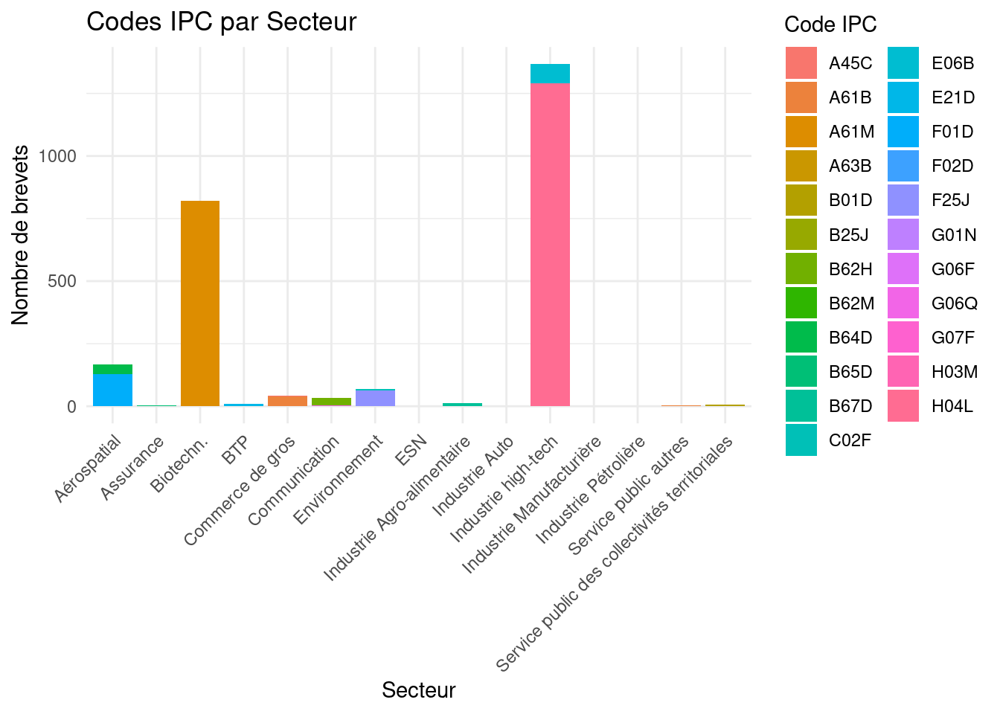
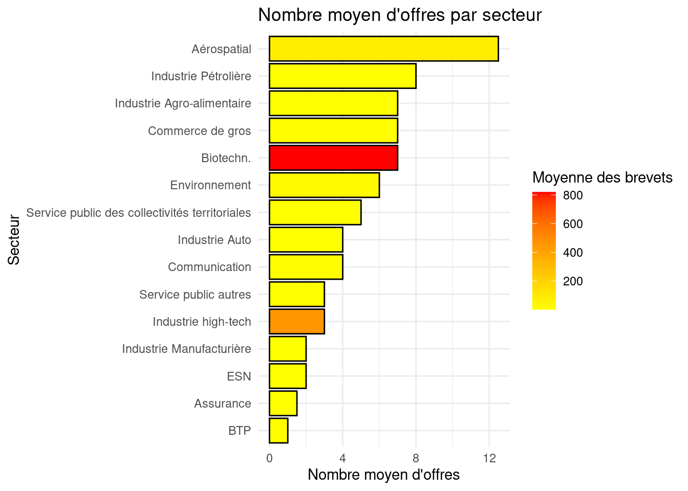
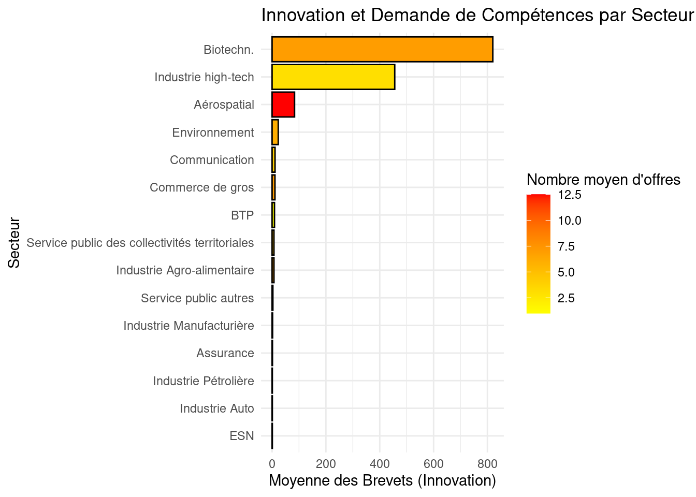
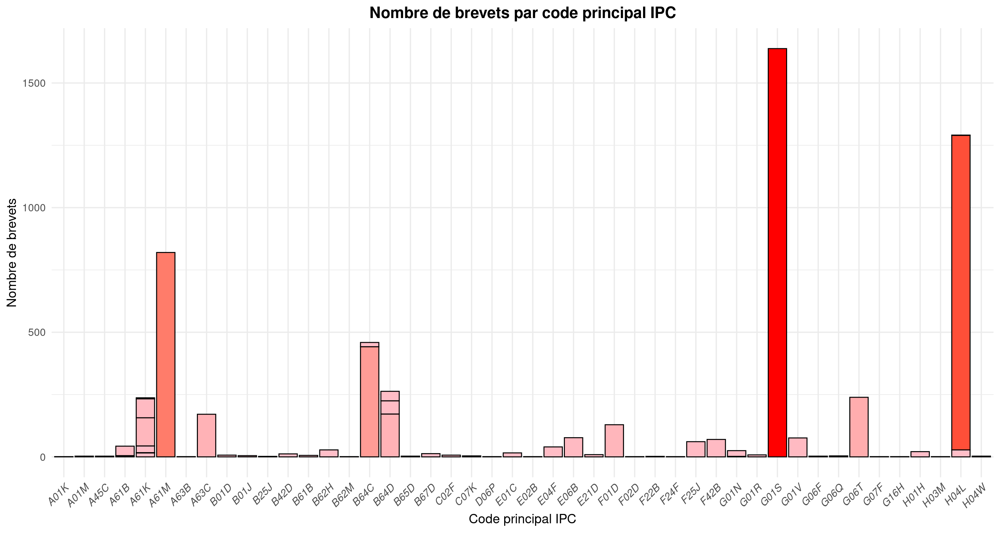
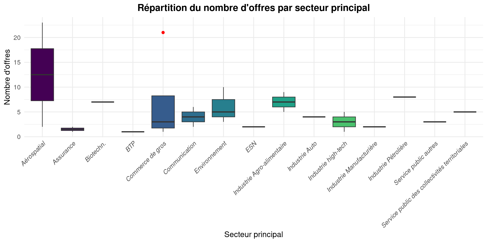
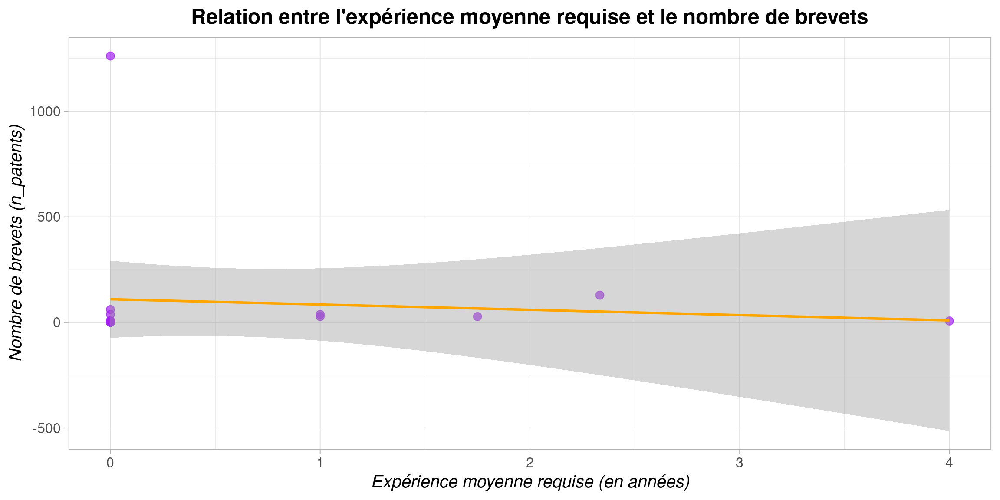
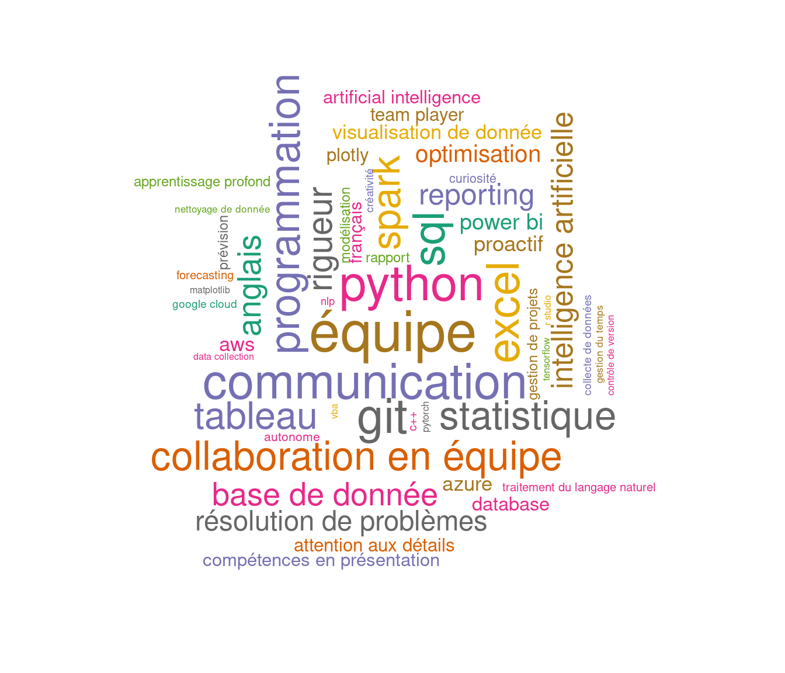

Analyse des Données
Dans cette section, nous nous intéressons à l’exploration des liens entre l’innovation des entreprises et la demande de compétences spécifiques.
En utilisant la base base_emp_inno.csv, qui regroupe des informations sur les entreprises déposant des brevets et publiant des offres d’emploi, nous analyserons comment ces deux facteurs interagissent. Cette analyse vise à mettre en évidence les tendances et les relations entre les efforts d’innovation des entreprises et les compétences qu’elles recherchent, offrant ainsi une vue d’ensemble des dynamiques entre l’innovation technologique et le marché de l’emploi.
1.Graphiques bivariés:
1.1 Codes IPC par Secteur
Ce graphique présente la distribution des brevets (représentés par le nombre total de brevets, n_patents) dans différents secteurs d’activité, regroupés par code IPC principal, avec chaque segment de couleur représentant un code IPC spécifique.
On peut observer que le secteur des technologies de pointe (high-tech) est particulièrement actif en matière de dépôt de brevets, avec une barre nettement plus haute par rapport aux autres secteurs, suivi du secteur biotechnologique et, enfin, du secteur aérospatial. Ces résultats mettent en lumière l’intensité de l’innovation dans ces secteurs clés.
Le graphique permet également de visualiser la diversité des innovations dans chaque secteur. Il est évident que les secteurs des technologies de pointe, de l’aérospatial, des communications et de l’environnement sont particulièrement diversifiés en termes de types de brevets déposés, avec des segments variés représentant différents codes IPC. Cette diversité peut refléter une approche multidimensionnelle de l’innovation dans ces secteurs.
L’analyse des proportions des couleurs dans chaque barre permet de déterminer quel code IPC domine dans chaque secteur. Par exemple, dans le secteur des technologies de pointe, le code IPC H04L (communications numériques) est le prédominant, tandis que dans le secteur biotechnologique, le code A61M (dispositifs médicaux) domine.
Cela suggère que l’innovation dans ces secteurs se concentre principalement sur un aspect technologique particulier, tel que les technologies de communication dans le secteur high-tech ou les dispositifs médicaux dans la biotechnologie.
1.2 Nombre moyen d’offres par secteur

Le graphique illustre le nombre moyen d’offres par secteur, avec l’Aérospatial en tête, affichant une barre longue indiquant un nombre élevé d’offres estimé à 12. Ce secteur est suivi par l’Industrie pétrolière, qui, bien que plus courte avec un nombre moyen d’offres de 8, reste significative, suivi de l’Industrie agroalimentaire et Commerce de gros de meme longueur (nombre moyen d’offres de 5) . Les quatres premiers secteurs (Aérospatial, Industrie pétrolière , Agroalimentaire et Commerce de gros ) sont tous représentés en jaune, suggérant une moyenne des brevets autour de 200. La Biotechnologie, avec une barre comparable à celles de l’agroalimentaire et du commerce de gros, se distingue par une couleur rouge plus intense, indiquant une forte concentration de brevets. Enfin, l’Industrie High Tech, bien que dotée d’une barre relativement courte (nombre moyen d’offres de 3), se distingue par sa couleur orangée, ce qui montre une moyenne d’offres plus faible mais une intensité d’innovation (brevets) plus importante que certains secteurs avec des barres plus longues. Ce graphique met en évidence les variations entre le nombre d’offres d’emploi et le niveau d’innovation au sein de chaque secteur
1.3 Innovation et demande de compétences

Le graphique “Innovation et Demande de Compétences” met en lumière la relation entre le nombre de brevets déposés et le nombre d’offres d’emploi dans différents secteurs. La Biotechnologie se distingue par une innovation élevée (plus de 800 brevets) et un nombre modéré d’offres (environ 7), représentée en orange. Cela suggère une forte activité d’innovation, mais une demande de compétences relativement stable.
En comparaison, l’Industrie High-Tech, avec environ 450 brevets, a un nombre d’offres plus faible (2 offres), représentée en jaune, ce qui pourrait indiquer un marché plus restreint pour ces compétences.
Enfin, l’Aérospatial, avec une moyenne de moins de 100 brevets, présente une forte demande en compétences (plus de 12 offres), indiquée par la couleur rouge vif, ce qui montre que malgré une innovation modeste, la demande de compétences dans ce secteur est particulièrement élevée.
Ce graphique souligne ainsi l’impact de l’innovation sur la demande de compétences, selon les secteurs.
1.4 Nombre de brevets vs Nombre d’offres par ville
Instruction : double cliquer sur une comptences pour voir le graphe unique de celle ci
Le graphique Nuage de points : Nombre de brevets vs Nombre d’offres par villes montre la relation entre le nombre de brevets et le nombre d’offres d’emploi pour chaque villes. Une observation notable est que certaines villes affichent des profils très différents en matière d’innovation et d’emploi. Par exemple, la ville d’Issy les Moulineaux présente un grand nombre d’offres d’emploi, mais relativement peu de brevets, ce qui suggère un dynamisme économique en termes de recrutement, mais peut-être moins d’innovation technologique. En revanche, des villes comme Courbevoie et Paris montrent une situation inverse, avec un nombre élevé de brevets mais moins d’offres d’emploi, ce qui pourrait indiquer une forte activité en matière de recherche et développement, mais une moindre demande d’embauche. La majorité des villes se regroupent dans une zone du graphique où le nombre d’offres d’emploi est autour de 10 et le nombre de brevets avoisine 250, indiquant un modèle assez homogène de dynamisme innovant et économique dans ces régions.
1.5 Code principal IPC en fonction du nombre de brevet :

Ce graphique illustre la répartition du nombre de brevets par code principal IPC (International Patent Classification). Chaque barre représente un code IPC spécifique, et sa hauteur correspond au nombre total de brevets associés à ce domaine d’innovation.
On observe que le code G01S, lié aux technologies de mesure et de contrôle, se distingue avec plus de 1500 brevets, suivi de près par le code H04L, associé aux technologies de communication, qui affiche presque 1300 brevets. Le code A61K, relatif aux préparations pharmaceutiques, arrive en troisième position avec environ 600 brevets. Ces résultats montrent que les domaines liés aux technologies de mesure et aux communications sont les plus prolifiques en termes d’innovation brevetée.
Les couleurs des barres varient en intensité, allant d’un rose clair pour les codes IPC avec moins de brevets à un rouge intense pour ceux avec un grand nombre de brevets. Cette palette de couleurs permet de visualiser facilement les secteurs les plus innovants. Les barres les plus rouges, représentant les codes IPC ayant les valeurs les plus élevées, signalent les domaines d’innovation les plus actifs, ce qui pourrait être un indicateur des secteurs économiques à fort potentiel de développement technologique
1.6 Nombres d’offre en fonction du secteur principal

Ce graphique met en évidence la répartition du nombre d’offres d’emploi selon les secteurs principaux. Chaque boîte (boxplot) représente un secteur et illustre la dispersion du nombre d’offres autour de la médiane, tout en mettant en évidence les éventuelles valeurs extrêmes.
Le secteur Aéronautique se distingue par une forte variabilité, avec un nombre d’offres élevé et une dispersion importante, traduisant une dynamique de recrutement diversifiée. À l’inverse, des secteurs comme Assurance, Biotechnologie, ou BTP présentent une faible variabilité, indiquant une homogénéité dans les opportunités d’emploi. Un point remarquable est observé dans le secteur Commerce de gros, où une valeur extrême (outlier) témoigne d’un département ou d’une entreprise avec un nombre exceptionnel d’offres.
Les secteurs technologiques et industriels, tels que l’Industrie high-tech et l’Industrie automobile, affichent également des volumes d’offres significatifs, reflétant leur rôle clé dans l’économie. En revanche, les secteurs comme le Service public des collectivités territoriales semblent moins actifs en termes de recrutement.
2.Estimations économétriques simples
2.1 Expérience moyenne requise (en année en fonction du nombre de brevets)

Ce graphique illustre la relation entre l’expérience moyenne requise pour les offres d’emploi et le nombre de brevets déposés. Chaque point violet représente un secteur ou un département, positionné selon l’expérience moyenne demandée (en années) et le nombre de brevets associés.
On observe que la majorité des points se concentre à proximité de 0 année d’expérience, ce qui reflète que la plupart des offres d’emploi nécessitent peu ou pas d’expérience préalable. Quelques cas isolés montrent un nombre très élevé de brevets, bien que ces cas soient rares et atypiques.
La ligne orange, représentant la tendance générale issue d’une régression linéaire, est presque horizontale. Cela indique qu’il n’y a pas de lien significatif entre l’expérience moyenne requise et le nombre de brevets déposés. La grande zone grisée autour de cette ligne illustre une forte incertitude, due en partie à une variabilité élevée et à l’influence de points extrêmes.
3.Word Cloud des compétences pondérées :
3.1 Nuage de mots des compétences pondéré par salaire
Le nuage de mots des compétences pondéré par salaire met en évidence les compétences les plus demandées et les mieux rémunérées. Parmi les compétences linguistiques, l’Anglais (136) se distingue comme la plus valorisée, soulignant son importance dans des rôles à forte responsabilité. En termes de programmation, des compétences comme SQL (162) et Git (141) ressortent, indiquant qu’elles sont essentielles dans les métiers techniques et bien rémunérées. Les compétences en modélisation (86) suivent également de près. Concernant les outils et logiciels, des compétences telles que Excel (112) et Tableau (89) sont très recherchées, notamment dans les secteurs de l’analyse de données et de la gestion. Enfin, la compétence Base de données (86) démontre l’importance de l’expertise en gestion et analyse de données. Ces résultats soulignent les compétences clés dans le monde professionnel, celles qui apportent à la fois une forte demande et des salaires élevés.
3.2 Nuage de mots des compétences pondéré par nombre de brevets

Le nuage de mots des compétences pondéré par brevet montre les compétences les plus présentes dans les entreprises innovantes. Parmi les compétences linguistiques, l’Anglais (136) apparaît comme une compétence clé, soulignant son rôle crucial dans les projets internationaux et les collaborations à l’échelle mondiale.
En programmation, Python (185) se distingue comme la compétence la plus valorisée, illustrant son importance dans les domaines technologiques et d’innovation.
Les compétences en collaboration (120) ressortent également, montrant que l’innovation est souvent le fruit du travail d’équipe.
Les compétences en statistiques (126) et en modélisation (86) sont primordiales pour analyser et développer des solutions techniques.
Enfin, des compétences comme communication (93) et Tableau (89) soulignent l’importance de la diffusion des résultats et de l’analyse des données dans les projets d’innovation brevetés.
4.Graphique pour les compétences
Instruction : double cliquer sur une comptences pour voir le graphe unique de celle ci
Le graphe montre la relation entre le nombre d’offres d’emploi et de brevets déposés selon les compétences . Les compétences comme Curiosité, Français, Rapport, et Prévision ont beaucoup d’offres mais peu de brevets, reflétant des compétences classiquement demandées dans des offres d’emplois. À l’inverse, des compétences comme Base de données, Intelligence artificielle, Programmation, et Python présentent davantage de brevets que d’offres, témoignant de leur importance dans des secteurs technologiques de pointe.
Les compétences informatiques (ex. : C++, Git, SQL,Python, Programmation) sont étroitement liées à l’innovation, avec un grand nombre de brevets déposés par les entreprises demandant ce type de compétences dans leurs offres d’emplois. Les compétences d’équipe (Collaboration, Communication, Gestion de projets) et personnelles (Rigueur, Autonomie, Créativité, Proactif) se retrouve sur l’ensemble du graphique car nécessaire et presque primordial dans tous les domaines. Enfin, les compétences en statistiques (R Studio, Nettoyage de données, Statistique, database) se révèlent particulièrement représentées dans les dépôts de brevets, renforçant leur lien avec les activités de recherche et développement.